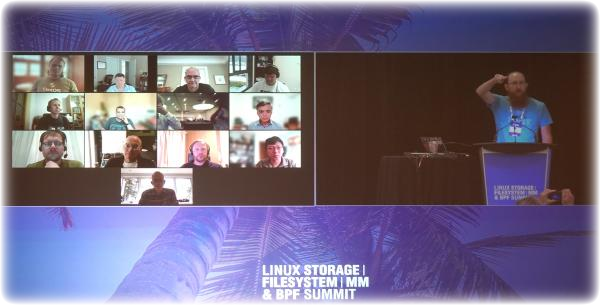

Remote participation at LSFMM
As with many conferences these days, the 2022 Linux Storage, Filesystem, Memory-management and BPF Summit (LSFMM) had a virtual component. The main rooms were equipped with a camera trained on the podium, thus the session leader, so that remote participants could watch; this camera connected into a Zoom conference that allowed participation from afar. In a session near the end of the conference, led by conference organizer Josef Bacik, remote participants were invited to share their experiences—on camera—with those who were there in person. It was an opportunity to discuss what went right—and wrong—with an eye toward improving the experience for future events.
Ric Wheeler was first up; he said that aside from the first few minutes where he could not hear anyone, "it was a good virtual experience". Mel Gorman echoed that and noted that it "was infinitely superior to not being able to participate at all". One thing he noted is that the "raised hands" in the Zoom interface were not monitored in some sessions. There were two sessions that he remembered where the speaker asked for objections or other comments and he was left "screaming at the mic". It is difficult to keep an eye on that when leading a session, he said; it was only a minor detraction from the overall great experience.
Bacik agreed that there were problems with ensuring that remote participants were heard. James Bottomley, who was onsite, asked why the "curated mute" feature was chosen; "since we vaguely trust ourselves", why not allow participants to unmute on their own? Bacik said that he had not really thought about it much going into LSFMM; eventually the filesystem track switched to "unmute at will", which seemed to work well.
Remote participant Jan Kara agreed that being able to unmute when he wanted to say something worked well, though, overall, the experience was "better than I was expecting". Bottomley said that it would have been better if Kara had turned on his video when he was going to talk, so that there was someone to focus on rather than having a "disembodied voice from around the room". Kara said he was unsure whether there was a way to see his video in the room if he had done so; in fact, the video side of the Zoom conference was only available if attendees were signed into it. Unlike this session, most of the others did not display the Zoom video on the conference-room screen.

Matthew Wilcox, who was present in Palm Springs, wanted to thank the remote participants for putting in the effort to attend, especially those where it was at being held at highly inconvenient times. "You have made this such a better conference."
A remote attendee said that LSFMM "went way better than I expected". He is more comfortable interacting via text than voice, so it was nice to have the Zoom chat feature available. Sometimes the chat got read to the room, which was "really great". If people introduced themselves before they made comments on the microphone, he said, it would help, especially for those who are new to the community.
Bottomley asked if it would be better to have a chat that everyone in the room could see (rather than just those logged into Zoom), but the attendee said that giving the session leader the option to decide if the comment was worth passing on made it less worrisome for him to make a comment. Onsite participant Ted Ts'o wondered if having a chat channel separate from the videoconference application, as it is for the Linux Plumbers Conference (LPC), made sense. Sometimes having a chat back-channel is useful even when there is another foreground conversation going on in the audio channel, he said.
Another remote attendee said that the sessions with remote presenters, where people could just comment without raising their hands, seemed to work better. One problem they noticed was that the video resolution was not sufficient to be able to read the slides or screen sharing much of the time; larger fonts would be helpful. An LSFMM virtual presenter noted that he could not see which of the local attendees was speaking, which was less than ideal. Bottomley had pointed his laptop camera at the room for the session and added it to the videoconference, but said that it was hard to see who might be speaking. For LPC, there will be a camera operator at the front of the room who will zoom in on speakers, but that "costs a fairly fantastic amount of money"; the laptop-camera option might be better if it is at all useful, he said.
A first-time attendee, who was remote, said that "content-wise it was perfect", though there was a problem with the volume oscillating periodically. Another remote attendee had several suggestions based on other events and meetings they had attended over the last few years. When the session leader wanders away from the podium, they are not just leaving the video feed, he said, they are also stepping away from the microphone so it can be hard to hear them at that point. A separate wiki or shared notes site that can be updated by everyone is helpful, as is a "watcher of the tech space" to monitor hands being raised, chat messages, and so on. He thought the laptop camera was helpful from a feedback perspective; if nothing else, it gives an indication of when might be a good time to jump in with a remote comment.
One of the A/V people said that, based on doing other events of this sort, he recommended having a separate screen at the front dedicated to the Zoom conference instead of trying to share it with the slides and such. That way, remote people can turn on their cameras and speak to the room when they have comments or questions. In addition, he agreed that having someone in charge of paying attention to the videoconference side of things (a "Zoom ambassador") is important. Bacik thanked the A/V staff, who did a "fantastic job", he said, using a modifier on that phrase that anyone who knows him can guess. That led to a loud round of applause for the staff.
There was some discussion of the problems inherent in being a virtual participant. For example, the more-or-less nine-to-five schedule can be even more difficult over video, which is why all-virtual events tend to stretch out the schedule over more days. That is not really possible for a hybrid event, since the in-person attendees cannot typically stay for many more days; the expense of renting the conference facility also factors into that. But virtually attending a conference in a different time zone and then trying to put in a full day at the office "is brutal", Gorman said.
In addition, virtual attendees miss out on the hallway track, which is often cited as half the value of technical conferences, and the social events, which are also valuable. Gorman said that it might be kind of creepy to try to somehow involve virtual attendees in those. There are tradeoffs that people are making when they attend virtually; missing out on those pieces is just part of that, he said. He is concerned that going too far in trying to accommodate virtual attendees would reduce the value of the in-person portion too much. There was general agreement with that.
Overall, it would seem that LSFMM went well, both locally and virtually. Much of that was due to the help of the Linux Foundation events staff, who Bacik has been working with for three years as the conference was scheduled—then canceled—several times. He specifically thanked those folks in the conference closing session a few hours later. It would seem there are some fairly minor improvements to be made, so a hybrid LSFMM next year should be even better.
| Index entries for this article | |
|---|---|
| Kernel | Development model |
| Conference | Storage, Filesystem, Memory-Management and BPF Summit/2022 |
Posted Jun 15, 2022 21:51 UTC (Wed)
by logang (subscriber, #127618)
[Link] (4 responses)
Posted Jun 16, 2022 0:58 UTC (Thu)
by mtaht (guest, #11087)
[Link] (3 responses)
Posted Jun 16, 2022 8:27 UTC (Thu)
by bluss (guest, #47454)
[Link] (2 responses)
Posted Jun 16, 2022 8:43 UTC (Thu)
by maniax (subscriber, #4509)
[Link] (1 responses)
Posted Jun 16, 2022 12:16 UTC (Thu)
by kpfleming (subscriber, #23250)
[Link]
Posted Jun 16, 2022 13:42 UTC (Thu)
by kleptog (subscriber, #1183)
[Link]
But the best is when you have someone who is there paying attention to the remote attendees and ensuring everything works well.
The LWN coverage was also very nice, thanks!
Posted Jun 16, 2022 14:37 UTC (Thu)
by ejr (subscriber, #51652)
[Link]
Posted Jun 16, 2022 17:02 UTC (Thu)
by alonz (subscriber, #815)
[Link]
This worked extremely well, and ensured the remote participants were never ignored.
Remote participation at LSFMM
Remote participation at LSFMM
Remote participation at LSFMM
Remote participation at LSFMM
Remote participation at LSFMM
Remote participation at LSFMM
Remote participation at LSFMM
In a recent company event I attended which had a remote component, the organizers had nominated for each session a "remote chat watcher" - someone physically in the room who had their laptop open and monitored the remote participants' chat, raised hands, etc.
Remote participation at LSFMM